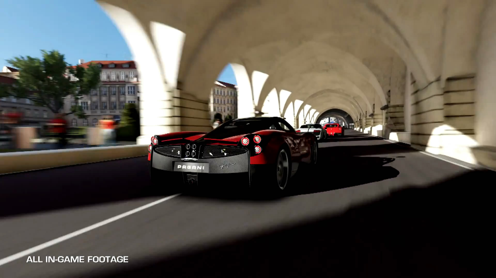
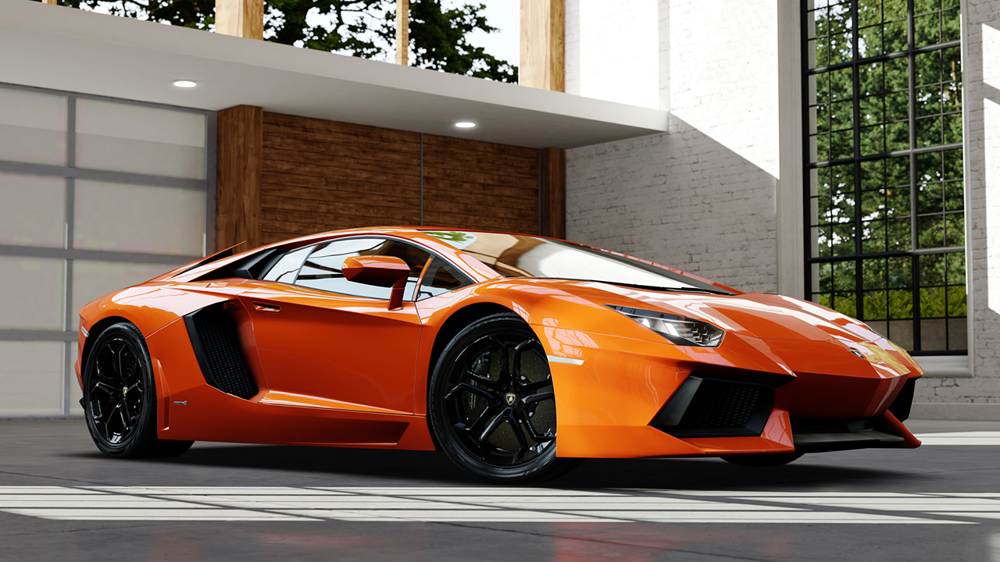
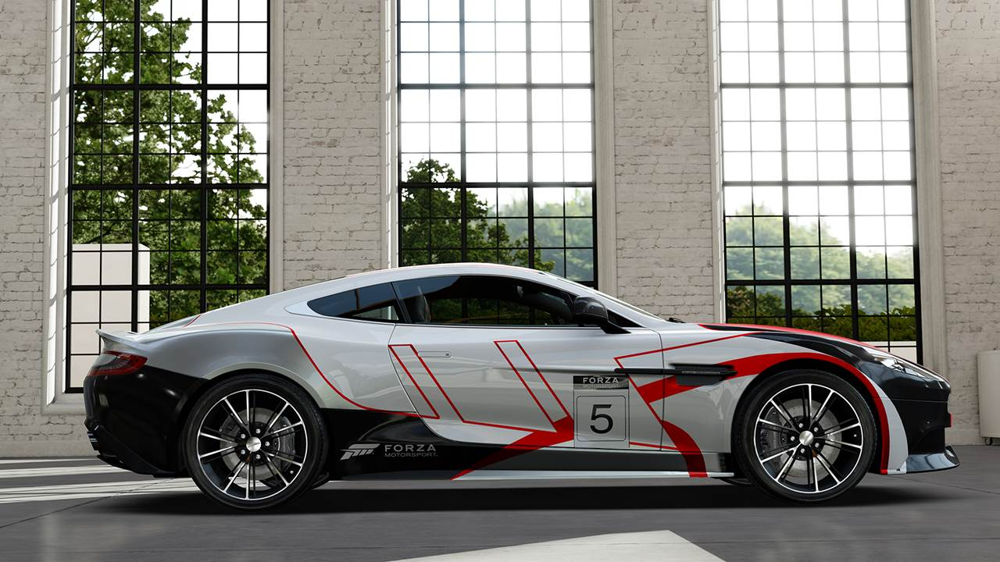

On one level, Forza 5 is everything it should be: the kind of launch title that makes you glad you’ve coughed up for a new console. It looks incredible, plays brilliantly, and ably demonstrates many of the virtues of Xbox One. If you have any kind of love for driving games and find it running in a store or get to play it around a friend’s house, then you’ll come away wanting both it and an Xbox One. In this respect, it’s arguably the best launch title on Xbox One or PS4, though fans of Killzone might beg to differ.
On another level, it’s slightly disappointing. You see, Forza Motorsport 3 was the first game to really break Gran Turismo’s stranglehold on the console driving sim, and Forza Motorsport 4 was even better. Being picky, we wished that it had had some of the thrills and spills of EA’s grossly under-rated Shift 2: Unleashed, but second for second, mile for mile, Forza 4 is the best driving game of the last generation. We can be sure that the same won’t be said of Forza 5. In isolation it’s a fantastic entry in the genre, but it’s simply not as good as Forza 4.
Why? Well, it really comes down to the career structure and the tracks. Forza 4 aced the former with its World Tour mode, which dragged you from track to track in a set order, but allowed you to decide which event you competed in on that track. Not only did this allow you to focus on the cars and events you liked playing, but it also kept you shifting from car class to car class if you liked. This – plus the generous dishing out of new cars every time you reached a new driving level – meant that you were constantly trying new things, and getting tangible rewards for your efforts. This was leagues away from the pedestrian championship grind of the Gran Turismo series. It was a case of bigger, better, faster all the way.
Forza 5 unwisely junks this idea, dividing its events into different car categories, covering compact sports cars, track toys, touring cars, exotics and the like, with each containing several lengthy series of races. All are unlocked straight away, providing you can afford a car to participate in them, and you work your way through them, only switching to a new series or new category once you’ve polished off the last.
This is a little unimaginative, and while there’s still a sense of progression in levelling up and buying new cars, you won’t really find it in the substance of the career. The more serious problem, however, is that there are only 14 tracks, and that a disproportionate number of these are real-world circuits – and not necessarily the most thrilling ones, either.
Great as new additions like Prague’s city centre and Bathurst’s Mount Panorama are, they don’t quite make up for the loss of tracks as lovable as Fujimi Kaido, Maple Valley Raceway, Rally di Positano or the mighty Nurburgring. Plus, with what tracks there are repeated endlessly across all the categories, it’s not long before you start wishing for a teensy bit more variety. Laguna Seca again? Le Mans again? How about a change of scene?
Getting hold of new cars is also hard work. You buy cars with credits won by racing in the different series, but once you get beyond the basic compact sports, sports and touring classes you can be looking at splashing out an awful lot of credits before you can get anything half-decent. Plan to buy a high-end Ferrari or McLaren and you might be looking at hours of grinding while you save up for your dream car.
If the trackside scenery doesn’t get you, particularly the snowy mountain scenery of the Bernese Alps or the cobbled streets and medieval architecture of Prague, then the lovingly rendered cars will. The modelling and lighting has now reached a level where the renders used in catalogues and adverts don’t look any better, and the interiors are practically bursting at the seams with carefully recreated detail. Running smoothly at 60fps in crisp 1080p, it’s the best-looking racer on a console right now.
More importantly, the handling has never been better. We’re not sure what work Turn 10 has done since introducing the new tyre-based handling model in Forza 4, but the sense of all the complex interactions between tyres, bodywork and track is basically unparalleled in a console racer, unless you’re talking Gran Turismo 5 or 6 with a high-end steering wheel plugged in.
Compacts sports cars and coupes feel fast, well-balanced and precise. You can feel the weight of the muscle cars. The brilliant Lotus 2-Eleven is skittish, prone to spinning but hugely enjoyable to drive, and if there’s anything more exciting than getting behind the wheel of the Dodge Viper and tackling the twists and turns of Prague, then we’re not sure our poor hearts can stand it. The Xbox One controller's 'impulse trigger' rumble feedback also plays its part. You can feel when you're hitting the top of the gear range, or sense when the car is about to slide out of control as you brake
As in Forza 4, you can tailor the handling to your tastes, giving you an easy drive with plenty of assistance if you want it, or a more authentic drive where you really have to work hard to keep the car on track. The choice is yours.
Forza 5 suffers from a reduced track list and unimaginative structure, but there’s no getting past the fact that the action on the track is better than ever, with magnificent graphics, superlative handling and a new edge thanks to the Drivatar AI. The latter isn’t a complete success, but we’ll take the way each makes each race more interesting every time. Forza 5 falls frustratingly short of greatness, but it’s an irresistible force all the same.